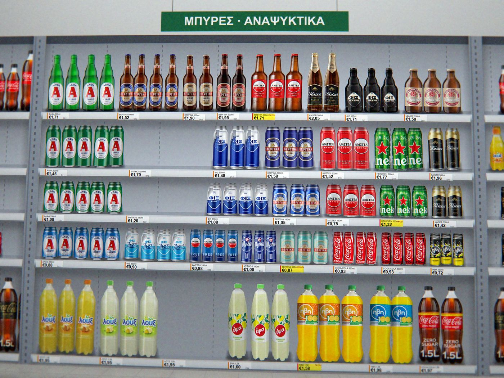

ShelfSense is an agent for supermarket department managers. Take a photo of a shelf and it finds missing and misplaced products, tells the shelf worker what to bring from the backroom, and orders what the backroom does not have. The model reads the shelf; every count, unit and euro is computed by code and logged.
Gen AI Summit Hackathon, Athens, November 2026. Open Track.

Built with Gemini, treg, fal, Telegram, FastAPI, DuckDB and Open Food Facts.
Today a department manager walks the aisles and checks the shelves by eye. Gaps are noticed late, stock sits in the backroom because nobody brought it out, and orders go in from memory.
of products are missing from the shelf at any given moment, on average.
of those sales are lost to the store: 31% of shoppers buy elsewhere, 9% buy nothing.
gaps are products the store already has, just not on the shelf.
Source: Gruen, Corsten & Bharadwaj (2002): 52 studies in 29 countries; the 8.3% average comes from the 40 that measured it.
Five steps, from the shelf photo to the refill. The tag shows who does each step.
One tap on the phone, or a phone left on the shelf as a live camera, checked every 5 seconds.
Gemini turns the photo into a table: shelf, position, product, facings, box.
The shelf is checked against the planogram: missing, short, or on the wrong shelf.
A task for the shelf worker, a Telegram alert, and an order to the central warehouse.
The shelf worker brings the units listed in the task and refills the shelf.
The model reads. It reads the shelf and writes the sentences.
Code computes. Every count, unit, case and euro is computed by code and logged.
People approve. Orders above the limit wait for a yes, in the console or on Telegram.
One agent and a small set of tools. The model reads the shelf; code computes every number.
/capture/camrules.jsontregOpen Food Facts/tasks · TelegramfalEvery tool call and every figure is written to an audit trail shown in the console.
Tested with Gemini on generated and real shelf photos, and offline with a built-in mock model.
Each gap becomes a task with a crop of the spot, the number of units and where to get them. Missing products come first, then short facings, then misplaced ones.
/tasks · TelegramA phone on the shelf sends a frame every 5 seconds. A task closes only when a later frame shows the shelf fixed.
/cam · GeminiUp to 3 cases or €50 it orders on its own. Anything bigger waits for a person to approve.
warehouse portal · approvalsSearches Greek trade and financial press. A claim is kept only if its quote appears word for word in the source, and a number only if the source is dated.
treg web and news searchWhen the manager accepts a layout change and confirms name and price, it makes a printable sign for the shelf edge.
fal image generationA built-in offline model replays the whole flow, so the demo does not depend on venue Wi-Fi.
mock provider · replayExample task, from the shelf above
Example audit trail, same shelf
Six come from published retail research and two are team rules from merchandising practice. A suggestion shows its rule, its numbers and its source. If a figure is missing, the rule does not run.
Market evidence, research figures, product data and the drinks prices are real. Anything only a retailer would have is made up for the demo.
Sources: IELKA Self Service Naftemporiki Gruen et al. 2002 (PDF) Eisend 2014
Today: one phone, one aisle, a task list ready before the store opens.
Next: the same findings across every store, to see which planograms fail and where.
With real sales and costs plugged in, the same rules run on real margins.
Built in two days at the Gen AI Summit Hackathon, Athens. Before the event we prepared a generic
agent skeleton with no shelf logic; it is declared in the README and tagged boilerplate in the history.